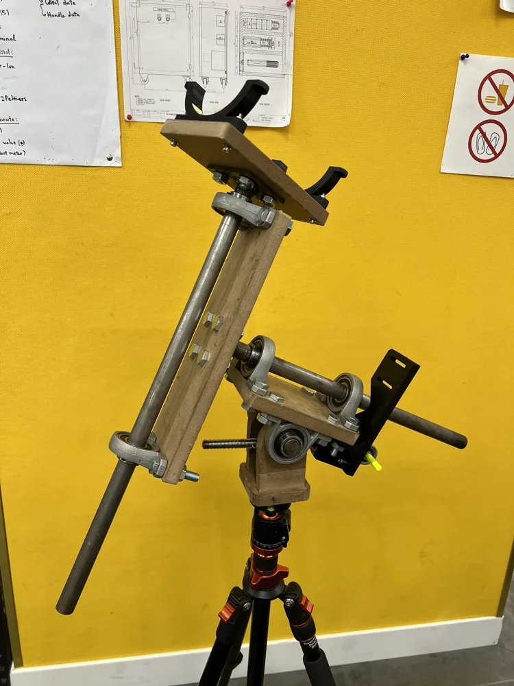
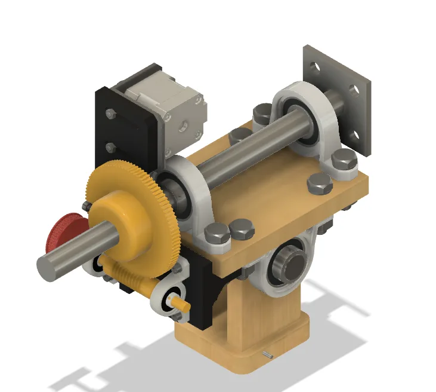

Mechanical design / 2024
A four-axis mount for astronomical tracking
A telescope-mount redesign built around precision gearing, adjustability, and a prototype I could fabricate.

Starting from an older build
I revisited the telescope mount I built in high school. The new design separated the adjustments used to set up the mount from the axes used to point the telescope and follow objects across the sky.
Designing the drive
The design uses worm gearing with an anti-backlash arrangement. I modeled the assemblies around the drive and telescope mount, then made a physical prototype to explore how the parts could be fabricated and assembled.
Where the project stopped
The work shown here covers the mechanical design and prototype. Completing the tracking controller and measuring on-sky accuracy were planned next steps.
From the build



